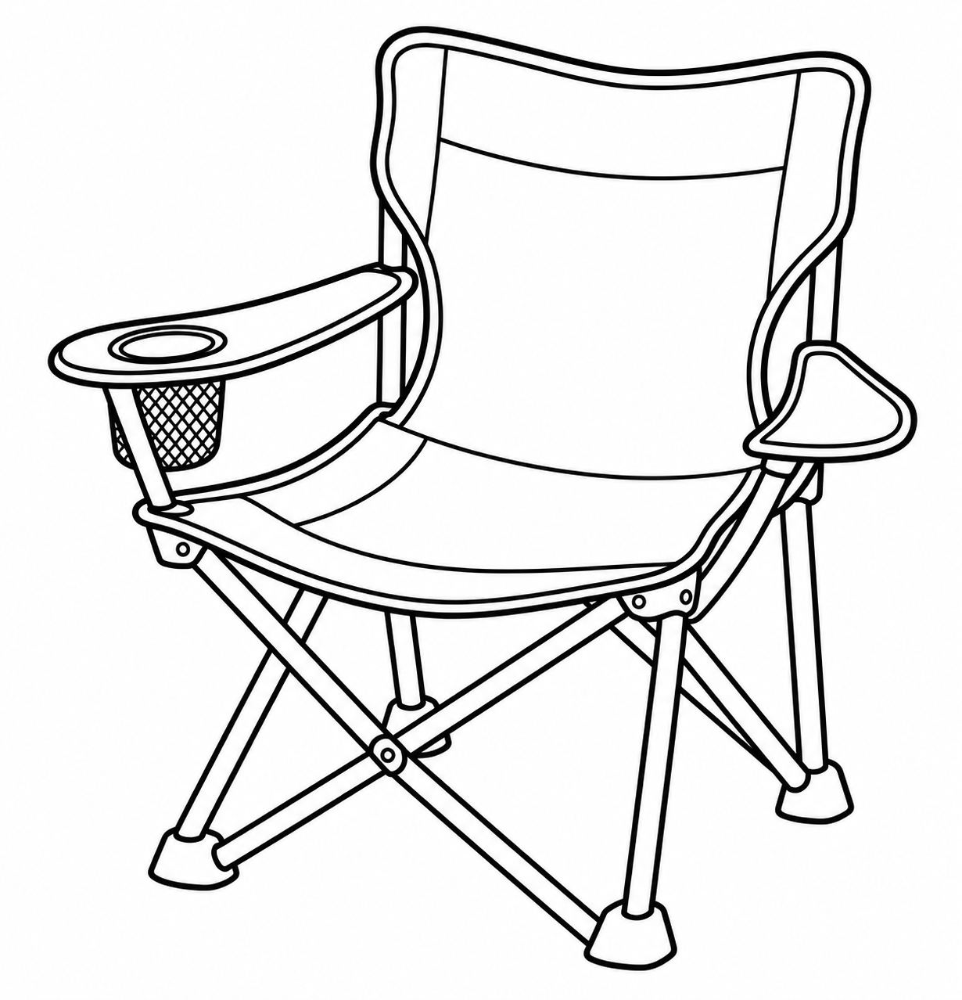
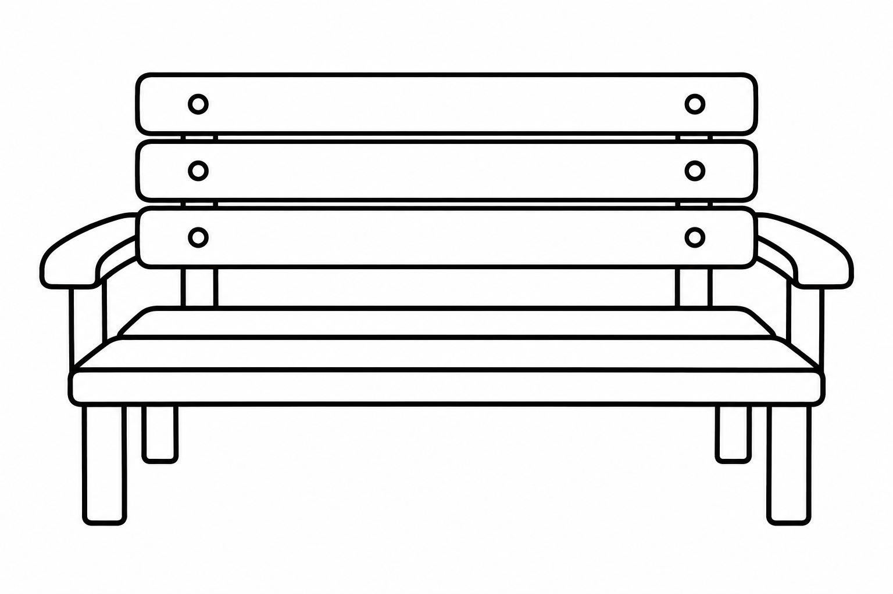
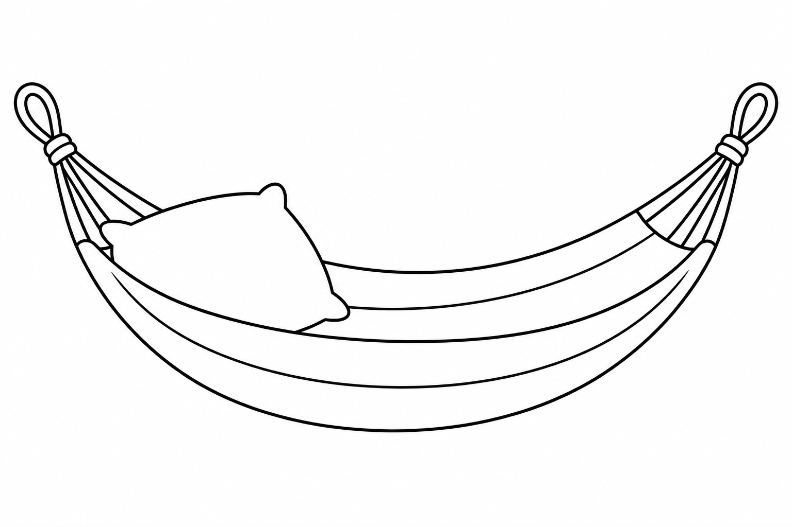
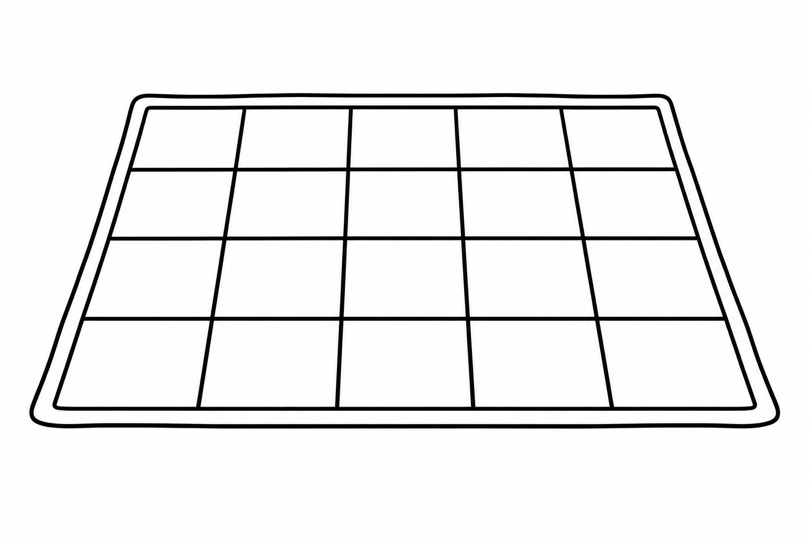

Month 9 · Level C · Week 2
Resting Places
🎨 My Drawing
Choose a picture and color it in!
Let’s rest on the chair.
Size

Draw with your finger or mouse.
Let’s rest on the bench.
Size

Draw with your finger or mouse.
Let’s rest on the hammock.
Size

Draw with your finger or mouse.
Let’s rest on the blanket.
Size

Draw with your finger or mouse.